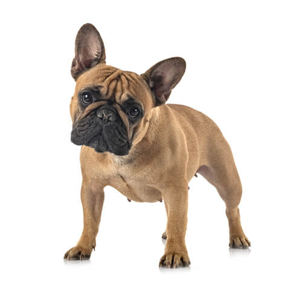
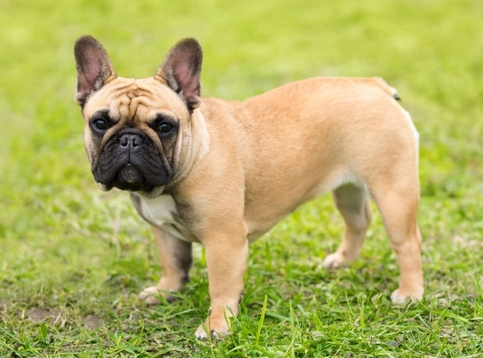
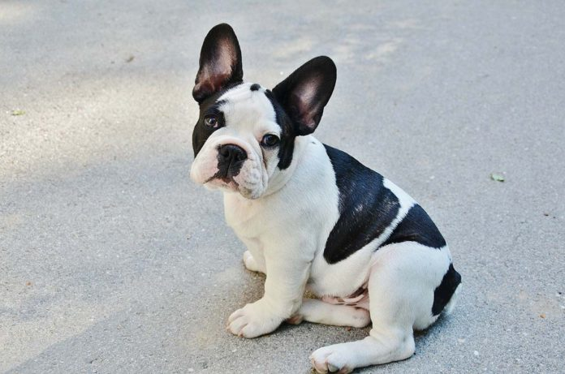
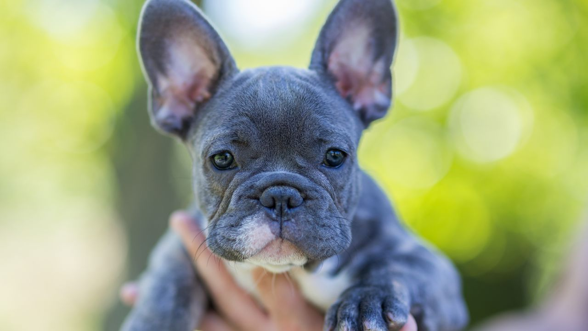
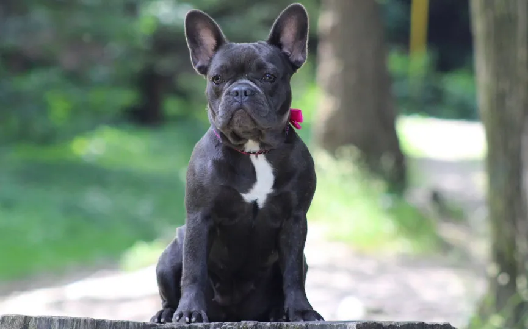

El Bulldog francés es fácil de reconocer por sus grandes orejas parecidas a las de un murciélago. Es un perro pequeño de cara plana y con un pelaje corto y brillante que puede ser atigrado, parcheado o leonado. El Bulldog francés puede medir entre 27 y 34,5 cm. Los machos adultos pesan 12,5 kg y las hembras adultas, 11 kg.
|  |
|
 |
|  |  |  |